Smart Factory IoT Architecture
Repository responsibilities
| Repository | Responsibility |
|---|---|
smart-factory-iot |
React dashboard, Node/Express tRPC API, PostgreSQL schema, accounts, roles, asset workflows, lifecycle history, demo data, and standards API gateway |
smart-factory-iot-backend |
.NET services for identity, telemetry ingestion, MQTT consumption, analytics, notifications, device APIs, and AAS generation/provisioning |
smart-factory-iot-edge |
Raspberry Pi machine gateway and ESP32 WROVER sensor firmware |
The Node API is the dashboard account and role authority. Dashboard sessions are HttpOnly cookies. The .NET telemetry bridge and the .NET AAS provisioner use separate service credentials. The private AAS stack has separate AAS and Submodel Repositories, AAS and Submodel Registries, a Concept Description Repository, and an AASX File Server.
Production hosts the React UI on Vercel and runs one reviewed ARM64 backend image in separate API and singleton-worker containers on Oracle. The API role contains Node, DeviceService, IdentityService, and AnalyticsService; the worker contains TelemetryService and NotificationService. BaSyx and Caddy run on the same Oracle host with separate service boundaries. Aiven, Redis Cloud, and CloudAMQP remain managed external systems. Physical Pi gateways, WROVER sensors, and ADA031 controllers stay in the factory.
Request and data flow

Production deployment topology
Supervisor activates the API and worker processes using the retained RENDER_SERVICE_ROLE compatibility variable. On Oracle the API role runs behind Caddy; internal service ports are private and diagnostic binds are loopback-only. The worker remains exactly one instance because it owns the persistent MQTT session. Application state lives in PostgreSQL, while the edge spool and telemetry outbox preserve retryable deliveries. Redis Pub/Sub provides transient fan-out rather than durable records.
The previous Render services are suspended. Backend image updates currently follow the manual Oracle runbook: qualify a pinned ARM64 image, preserve protected runtime settings, stop the singleton worker, update and verify the API, then start one worker and verify MQTT delivery. The Vercel frontend release workflow waits for matching main-source CI. Shared hosting is a single failure domain and does not establish high availability. See the visual deployment guide and current Oracle source runbook.
Assets and AAS
The Devices page registers connectivity records as either gateway or edge_device. Both are devices; industrial equipment represented by an AAS belongs under Assets and can be mapped to a gateway.
An industrial asset is distinct from an edge gateway. Quick Create sends validated equipment identity to the private DeviceService, which generates IDTA template instances, registers them with the AAS and Submodel Repositories, and returns the canonical documents for application persistence. BaSyx can register descriptors automatically with the AAS and Submodel Registries. Import Package uploads a bounded multipart .aasx; DeviceService validates OPC relationships and supported AAS core JSON/XML, registers each shell, submodel, and concept description, and stores the original package in the AASX File Server. The generated AAS Core 3.1 C# SDK validates models through a compatibility view for v3.2 administrative timestamps; this is not full v3.2 metamodel conformance. Node associates returned shell documents with asset rows in the same PostgreSQL database. Imported shells preserve their vendor package and cannot be overwritten through the form editor. asset_devices maps an asset to a gateway, protocol, endpoint, and tag/register mappings. Credentials are not stored in endpoint URLs or published mappings. Lifecycle history remains an application audit log.
The full standards API is not reimplemented in tRPC. /api/aas/* authenticates the application session, requires the engineer or admin role, and proxies methods to the configured AAS component using an OAuth client-credentials token. Repository, submodel, registry, and file-service URLs are configured independently. The dashboard gateway and DeviceService can resolve the token endpoint from OIDC discovery or use an explicit token URL; an optional scope is sent with the token request. This allows company endpoints to be changed through deployment configuration. Public IDTA demonstrators remain test targets and are not production data stores. If no AAS service is configured, the gateway returns 503; dashboard asset records and JSON export remain available from PostgreSQL. DeviceService publishes retained QoS 1 complete desired-state profiles and short-lived non-retained ADA031 V4 jog commands to CloudAMQP gateway command topics. The dashboard signs a short-lived engineer/admin token after checking the current database role, and DeviceService enforces that role on its control route. The Pi applies profiles atomically and only accepts an ADA031 command for an exact local allowlisted asset ID and matching ada031_v4_serial profile. Its one-byte USB serial write acknowledgement is not physical-motion feedback. The WROVER cannot access CloudAMQP; only its Pi gateway consumes that gateway's command topic. CloudAMQP requires TLS and scoped service/gateway credentials. The Pi-local Mosquitto broker uses TLS and per-sensor publish-only ACLs; the WROVER has no cloud credentials. Its optional Pi-local command subscription accepts only commissioned bounded GPIO pulses. Eligible native MQTT devices can connect directly to CloudAMQP with individual TLS identities and per-device ACLs; the backend receives both direct and gateway-originated telemetry. CAEX 3.0 export is available for the asset hierarchy, but it omits machine address mappings and is not validated against AutomationML OWL/SHACL recommendations.
This is an asset lifecycle, telemetry, and gateway configuration platform, not a safety-rated control system. It must not perform emergency-stop, guarding, interlock, or other protective functions. Keep those functions independent and complete a site-specific risk assessment and validation before production use.
When no assets exist, ENABLE_DEMO_DATA=true provides the initial demo-data setting and can seed example assets through the API/database layer. Administrators can subsequently change the persisted deployment-wide setting from the Overview page; all replicas refresh it from PostgreSQL. Browser code does not contain fallback equipment records. Local development may build local AAS JSON when the provisioner URL is absent; production asset creation fails closed until the private .NET provisioner is configured.
Identity and access
The Node API verifies bcrypt password hashes, issues an eight-hour HS256 JWT in an HttpOnly cookie, and reloads the current user role from PostgreSQL for protected requests. Cookie-authenticated unsafe requests with an Origin header must match the same origin or an exact allowed frontend origin. Browser code does not read or store the JWT. viewer, operator, engineer, and admin are the application roles. The AAS client-credentials identity is server-only and must be trusted by the AAS runtime's OIDC/ABAC configuration.
Demo data
With demo data enabled, startup seeds a PostgreSQL-backed compressor, transformer, and Windformer wind turbine generator scenario when no live assets exist. Administrators can show or hide those persisted demo records with the Overview toggle without deleting them. The setting is stored centrally in PostgreSQL and refreshed across web replicas. The seed includes gateway connections, telemetry, alerts, template-based AAS documents, and lifecycle history. Windformer identity and operating measurements are synthetic, and the seeded 2.5 MW nameplate is a demo value. An idempotent upgrade adds Windformer to an existing demo scenario without replacing its records. Demo records are visibly simulated and cannot be lifecycle-edited. Demo login seeding remains independent.
The supplied aas-specs-aasx-3.2.0.zip includes the IDTA-01005 package example, which demonstrates generic shells, submodels, and embedded files. It does not define a Windformer machine model. The import UI renders the imported shell, nested elements, semantic identifiers, concept descriptions, and file references from the package; Windformer is generated separately from the application's IDTA template builder and its synthetic telemetry is marked as demo data.
The ADA031 V4 controller has bounded jog, calibrated repeat, demonstration, operational stop, and neutral commands—not arbitrary motion setpoints. Each engineer/admin action publishes an expiring command; the Pi checks the local asset allowlist and protocol profile, then writes one allowlisted ASCII byte at 9600 baud. The connected firmware supplies software clamps and controller telemetry, but the application cannot confirm actual position, mechanical travel, or completed movement. The first USB serial open can reset the board and move its five controlled servos to 90°. General industrial motion, speed/angle setpoints, and software emergency stops are not implemented. Gateway and direct-MQTT telemetry paths are both supported; use a gateway for local protocols/control and use direct MQTT only for native-network devices with device-scoped TLS credentials and ACLs. An application command is not a safety-rated emergency stop; emergency-stop and safe-torque functions require a machine-specific safety design and independent safety hardware. See EU Machinery Regulation 2023/1230 and IEC 60204-1.
Storage and operations
- The dashboard API uses PostgreSQL through Drizzle ORM. Production uses Aiven with
DATABASE_SSL_MODE=verify-fulland the provider CA inDATABASE_CA_CERT; local Compose uses local PostgreSQL with TLS disabled. - Production Redis Cloud URLs must use
rediss://; Redis Pub/Sub is transient notification transport, not durable application data. - Keep CloudAMQP MQTT (port 8883/TLS) and AMQPS credentials on backend services and the Pi gateway only. The WROVER receives distinct local Mosquitto credentials and the Pi broker CA.
- Store
JWT_SECRET,INGESTION_API_TOKEN, AAS OAuth client secret, database credentials, broker credentials, and machine protocol credentials in a secret manager or protected runtime variables. - Keep the AAS Environment and its database on a private network. Expose
/api/aas/*only through the Node role-checking gateway. - The E2E script uses a disposable PostgreSQL container and does not connect to the developer's
.env.localdatabase.
The dashboard's core HTTP/API path, PostgreSQL sessions/roles, AAS revision checks, and login throttling are shared across replicas. WebSocket broadcasts use Redis Pub/Sub and authenticated upgrade checks, so AAS change notifications reach clients connected to any dashboard replica. Notifications and email retries are durable in PostgreSQL. Production grouping uses persisted asset metadata; the former process-local device-group API has been removed. Set TRUST_PROXY to known ingress addresses only; its default is disabled.
The Dashboard summarizes the asset fleet; Live Monitoring shows connectivity and latest readings; Alerts combines incident response and searchable records; Analytics aggregates persisted samples attributed to AAS assets. Threshold repeats escalate an existing incident instead of creating duplicates. Operators acknowledge incidents; assigned engineers record confirmed downtime and resolve their incidents, with admin override. Communication loss alone is not production downtime. Mean downtime-to-resolution includes only incidents with both timestamps.
The read-only Assistant uses approved focused guides and a bounded database snapshot. Its optional server-side Onesa connection uses a configurable model provider; credentials stay on the server. The UI shows context capture time and source excerpts. If the provider is disabled or unavailable, local guides and available data remain usable. Connection endpoints, full AAS packages, account details, and controls are excluded. See Assistant configuration and data boundaries.
Application user sign-in currently uses the built-in email/password and role model. AAS_OIDC_* configures service-to-service client credentials for the AAS runtime; it does not enable Entra user SSO. See the AAS OIDC configuration guide for the required app registrations and environment settings.
See authorization and AAS, API flows, and the deployment guide for configuration details.
Recovery and analytics limits
The Pi queues normalized telemetry privately on disk before cloud publication and removes it only after PUBACK. The backend persists before MQTT acknowledgement; an independent outbox retries dashboard and AMQP delivery. Stable ingestion/event identities tolerate replay. The dashboard rejects unlinked asset attribution and retains named asset signals. Factory downtime requires explicit confirmation; acknowledged incidents remain open until resolved.
Asset analytics currently caps a query at 93 days and 200,000 samples, with explicit errors instead of silent truncation. Gateway time-bucket aggregation runs in PostgreSQL and ignores null readings. Production retention, rollups, load budgets, recovery objectives, and event-consumer idempotency still require acceptance evidence in the relevant deployment environment.